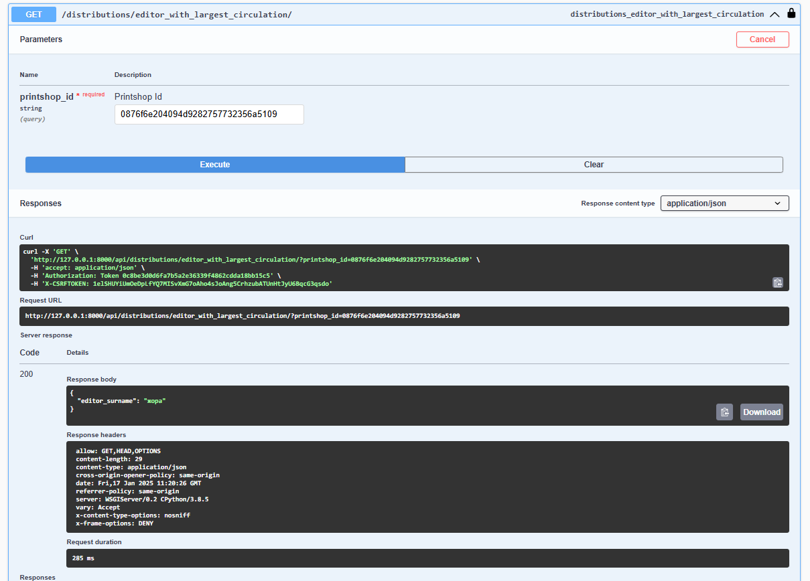
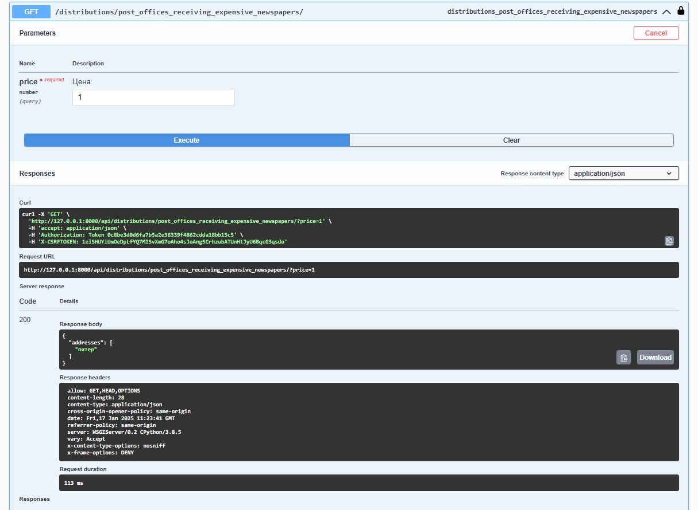

Лабораторная работа №3
Система, позволяющая отслеживать распределение по почтовым отделениям газет, печатающихся в типографиях
Модели
- Editor (Редактор газеты)
- Newspaper (Газета с ценой и индексом итд)
- PrintShop (Типография)
- PostOffice (Почтовое отделение)
- Distribution (Отслеживает распространение газет из типографии в почтовые отделения)
Endpoints
Editors
- URL:
/editors/ - Methods: GET, POST, PUT, DELETE
- Description: Manage editor information.
Newspapers
- URL:
/newspapers/ - Methods: GET, POST, PUT, DELETE
- Description: Manage newspaper information.
Additional Action:
GET /newspapers/{id}/index_and_price/
Retrieves the index, price, and last price update timestamp for a specific newspaper.
Print Shops
- URL:
/printshops/ - Methods: GET, POST, PUT, DELETE
- Description: Manage print shop information.
Additional Action:
GET /printshops/{id}/report/
Retrieves a detailed report of the newspapers printed and distributed by a specific print shop.
Post Offices
- URL:
/postoffices/ - Methods: GET, POST, PUT, DELETE
- Description: Manage post office information.
Distributions
- URL:
/distributions/ - Methods: GET, POST, PUT, DELETE
- Description: Manage distribution records.
Additional Actions:
-
GET /distributions/newspapers_printed_at_address/
Retrieves addresses of print shops where a specific newspaper was printed.- Query Parameters:
newspaper_name(required): Name of the newspaper.
- Query Parameters:
-
GET /distributions/editor_with_largest_circulation/
Retrieves the surname of the editor whose newspaper had the largest circulation at a specific print shop.- Query Parameters:
printshop_id(required): ID of the print shop.
- Query Parameters:
-
GET /distributions/post_offices_receiving_expensive_newspapers/
Retrieves addresses of post offices receiving newspapers priced higher than a specified value.- Query Parameters:
price(required): Price threshold.
- Query Parameters:
-
GET /distributions/newspapers_with_low_circulation/
Retrieves newspapers with circulation lower than a specified quantity.- Query Parameters:
quantity(required): Circulation threshold.
- Query Parameters:
-
GET /distributions/newspaper_distribution_at_address/
Retrieves post offices receiving a specific newspaper from a specific print shop.- Query Parameters:
newspaper_name(required): Name of the newspaper.printshop_address(required): Address of the print shop.
- Query Parameters:
Запросы к БД
- Фамилия редактора газеты, которая печатается в указанной типографии самым
большим тиражом?

- На какие почтовые отделения (адреса) поступает газета, имеющая цену, больше
указанной?

etc.
Authentication
- The API requires authentication for all endpoints.
- Authentication is managed through
djoserandTokenAuthentication.
URL Routing
- Base URL:
/ - Auth Endpoints:
/auth/
Installation
- Include the app URLs in your Django project's
urls.py:python from django.urls import path, include urlpatterns = [ path('', include('your_app.urls')), ] - Ensure you have the necessary models and serializers defined in your project.